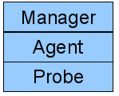
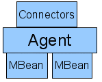
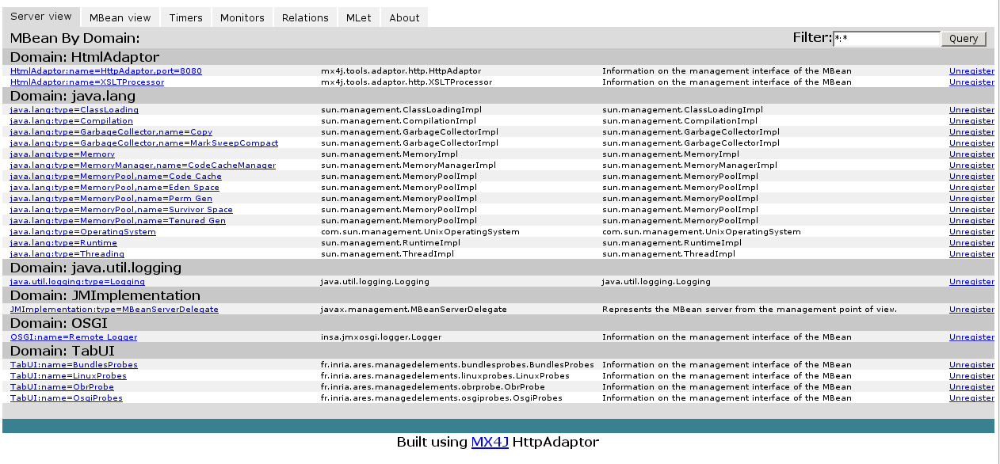
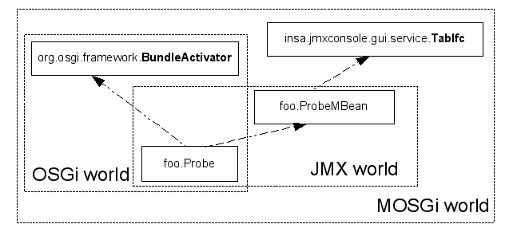
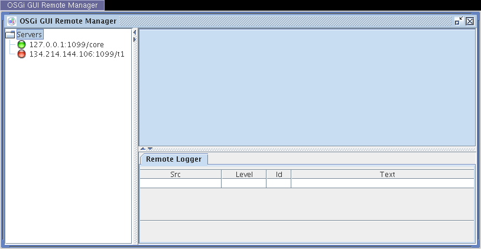
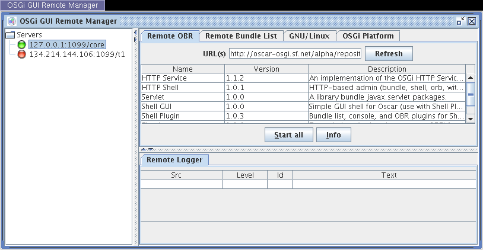
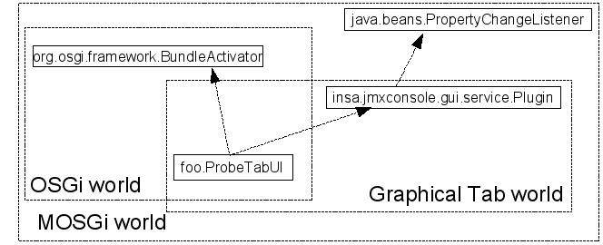

Developping probes for MOSGi framework
MOSGi is a management infrastructure for OSGi gateways remote management. The architecture relies on JMX management infrastructure and is classically build on a three layered system:

- The probe layer: are low layer elements that drive the gateway. They can either get information from the gateway (gateway status) or set information on it (install a bundle),
- The Agent layer: there is one agent per gateway and is responsible for maintaining access to a list of available probes,
- The Manager layer is the remote environment that can communicate with the agent to get information from the gateway through the probes
There are various way to implements this architecture (CIM/Wbem, Snmp, JMX). We have choose to use the JMX proposal because it is standardized in the java virtual machine since jdk1.5.
JMX management infrastructure synthesis
Sun JMX proposal defines the following elements :

- The agent is the registry for probes called MBeans and is accessed through connectors.
- MBeans are java objects that register themselves to the agent under some name
- Connectors are end points were external managers can communicate with. There are currently two available connectors : an xml/http connector and a rmi based connector. We are using the rmi connector (JSR160).
In the JMX world probes are represented as MBeans. They are java singleton object that declare a single interface to the agent. This interface is registered under a unique name within the agent namespace. The JMX namespace is structured as a domainname:mbeanname unique name. The following html page represents an example of this kind of namespace (we use the httpconnector connector with the agent to get this information).

These are various mbeans deployed on a specific gateway. We can identify 4 columns : the mbean registered name (and domain), its implementation, a comment and a function to unregister it.
Mbeans are component that declare a management interface that should have a syntactic name similar to the class they instrument. For instance the class foo.Test should implement a management interface whose name is foo.TestMBean. The registration mechanism associates a implementation (conform to the management interface) with an objectName (a unique identifier). The corresponding call is something like :aMbeanServer.register(aMBeanImplementation, anObjectName);. There are many kinds of MBeans (standard, dynamic, model and simple) but their description is out of the scope of this document.
MOSGi probe developpement
Our management infrastructure proposes a framework for deploying standard mbean within OSGi gateways. It also embeds a reference to a graphical part (manager view) directly in the Mbean itself. Thus the management console is automatically populated with client part of the management system.
Gateway probes
These probes are developed in conformance to the following elements.
- A probe must be registered under the domain TabUI. It means that they will have a corresponding tab in our management console.
- A probe must implement a management interface conform to the JMX specification (ie : foo.LinuxProbe --> foo.LinuxProbeMBean)
- The management interface must extend TabIfc (which declares a single method : getBundleName()). This methods returns an url were the management console should find a tab that can establish a management dialog with the probe.
- The probe is made available as a standard OSGi Mbean that will make its registration during the bundleActivator start method.
The following picture illustrates relations between these elements.

For instance a Probe that declares a single management function int getValue();should provide the following interface:
package foo; import insa.jmxconsole.gui.service.TabIfc; public interface ProbeMBean extends TabIfc { public int getValue(); }
And the following class:
package foo; import org.osgi.framework.BundleActivator; import org.osgi.framework.BundleContext; import org.osgi.framework.ServiceReference; import insa.jmxconsole.gui.service.TabIfc; import javax.management.MBeanServer; public class Probe implements BundleActivator,ProbeMBean{ ////////////////////////////////////////// // BundleActivator Interface // ////////////////////////////////////////// /* The probe lifecycle is linked to the bundle lifecycle */ public void start(BundleContext bc){ /* Here we register the Mbean within the agent */ ServiceReference sr = context.getServiceReference(MBeanServer.class.getName()); if (sr!=null){ MBeanServer server = (MbeanServer)this.bc.getService(sr); server.registerMBean(this, new ObjectName("TabUI:name=Probe"); } } public void stop(BundleContext bc){...} /////////////////////////// // Management interface // /////////////////////////// public int getValue(){return 10;} /* A getIfc function comes from RemoteIfc interface that enable the manager (remote console) to a bundle that can communicate whith this probe from a remote URL */ public String getBundleName(){ return "http://somewhere/agraphicaltab.jar" } }
Once the probe is made as a bundle it can be deployed on the remote gateway. Then a manager (management console) can ask communicate with the gateway agent to manage the probe.
MOSGi JmxConsole architecture
When a probe is deployed on a remote gateway it is manageable by standard management consoles like JConsole, MC4J... We have developed our own management console that is able to manage probe in a more dedicated approach.
The management console is based on a plugin mechanism. Each plugin is represented as a tab and each tab manages a probe. The console is launched with two bundles. Remotegui.jar is the execution framework and remotecomponent.jar contains a sole remote logger service that gets remote notification from gateways. The screen represented the gateway status after it has been launched.
The left panel identifies connected gateways,
The upper center panel is an container for tabs from managed gateways,
The lower center panel contains the remote logger display that shows notifications from remote gateways.
When the user selects a gateway (green flag) the console will do the following actions :
- Ask all MBeans in the TabUI domain.
- For each of these MBean, get the URL of bundle that provides the tab. This is done through the call to getBundleName( ) method in RemoteIfc interface.
- Install the bundle on the gateway
For instance if the user selects the green point he gets the following tabs.

4 probes have been deployed on the remote gateway and 4 graphical tabs have been installed.
Graphical tab integration
When developing a probe one shall provide a corresponding MOSGi tab. It should follow these guidelines.
- It should be a bundle in order to be remotely installed on the console
- It should implement Plugin interface with is the jmxconsole container interface specification.
The plugin is mainly conform to the java beans specification development. The jmxconsole acts as a bean container and each tab is a bean in this infrastructure. This is the general architecture of a Tab class.
The plugin interface has the following structure:
package insa.jmxconsole.gui.service; import java.awt.Component; import java.beans.PropertyChangeListener; public interface Plugin extends PropertyChangeListener{ public String getName(); /* The name of the tab */ public Component getGUI(); /* This is called by the container to get the graphical component */ public void registerServicePlugin(); /* This is called by the framework when a new gateway is selected */ public void unregisterServicePlugin(); /* see before */ public String pluginLocation(); /* This a unique identifier of the plugin */ /* These are constants that enable communication between container and plugins. They are treated in the propertyChange function brought by the javabean API */ public static final String NEW_NODE_SELECTED="newNodeSelected"; public static final String NEW_NODE_READY="newNodeReady"; public static final String NEW_NODE_CONNECTION="newNodeConnection"; public static final String EMPTY_NODE="emptyNode"; public static final String PLUGIN_ADDED="pluggin_added"; public static final String PLUGIN_REMOVED="pluggin_removed"; }
Implementation tabs are provided as open-source code. You can find various implementation of this interface in felix repository in the mosgi.managedelements.xxx.tab elements.
Function call sequence
The next figure presents a function call sequence when using MOSGi framework.